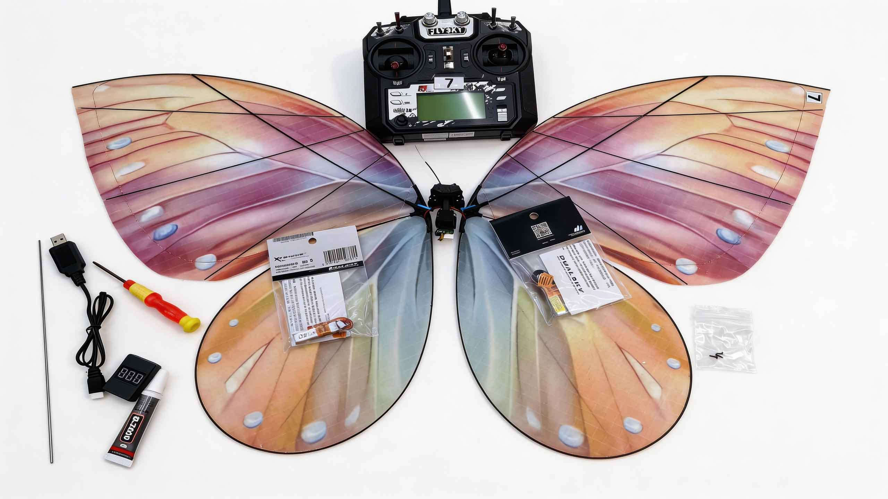

Wedding Reveal
Use a single butterfly when the audience should focus on one emotional entrance.
The motion reads softly on camera, works well for ring delivery moments, and feels more intimate than a louder stage effect.
Nooralis visual presentation
A cleaner presentation page for buyers, event planners, and venue teams who want to understand how the Nooralis butterfly looks in motion, on camera, and inside a real event flow.
Instead of presenting the product as a generic drone, Nooralis frames it as a scene tool: an emotional reveal for weddings, a first beat for stage openings, or a motion accent for branded events.
The motion reads softly on camera, works well for ring delivery moments, and feels more intimate than a louder stage effect.


Buyers are not only checking the product. They want to know how it packs, what it looks like on site, how long each cycle lasts, and whether the store has a clear process after payment.
The butterfly is built to read as a reveal object, not a technical drone, especially in calmer indoor or sheltered event settings.
Each kit includes the host, wings, remote control, two batteries, USB charging accessory, manual, and lockable case.
Choose LED or standard wings depending on venue lighting, wedding tone, launch color palette, and camera contrast.
Direct payment is paired with a private order-details step so the team can match the transaction to shipping and configuration.
These clips help explain both the emotional application and the product handling side of the kit.
Useful when a buyer wants to understand how the effect lands with a real audience, not just as a tabletop demonstration.
Useful for buyers who want a closer look at the kit, build style, and how the controller-and-battery workflow feels.
This page is designed so a buyer can glance through product visuals and quickly understand what ships, what changes by color, and what the kit looks like in transport.



The store is designed to let single-kit buyers move quickly, while still keeping custom and event-timed orders in a controlled quote process.
Buyers inspect the videos, imagery, color options, package list, and specifications before deciding how they want to use the butterfly.
One-kit orders can use direct checkout, while brand, venue, or multi-unit needs are routed into a written quote conversation.
After payment, the buyer returns to the Nooralis order-details page and submits the shipping address and PayPal reference.
The order desk matches the record, confirms the configuration, and prepares the next shipping or production step.
This page works well as a presentation layer. When the buyer is ready, move them back to the store for payment or into the quote form for custom orders.